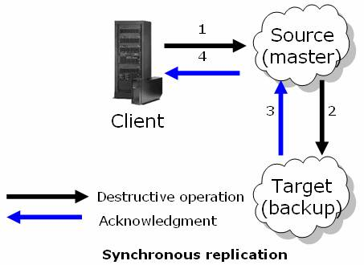
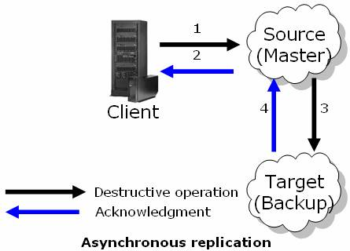

Replication is the process of duplicating or copying application data and operations from a source Space to a target Space, or to multiple target spaces. Replication is used mainly for high availability, where a replica Space is running in backup mode or for sharing local site data with remote sites. The operations that are replicated are the modifying operations, i.e. those that actually affect the data that is stored in the Space instance, such as Write/Take/Update and Lease cancel/renewal.
There are three types of replication topologies:
This topology consists of a group of Space instances that are part of the same replication group. One of the Space instances is elected and serves as the primary Space instance of the group. The application interacts with the primary instance, while the other instances serve as the backups of the primary.
The number of backups per partition is zero or one.
The backup Space instances are exact replicas of the primary Space instance. If the primary instance fails, they are ready to immediately replace it. This happens without any data loss, and is transparent to the Space proxy connected to the Space instances.
This topology extends the simple Primary-Backup topology with a mirror service that is part of the primary backup replication group. The mirror service receives the replication data from the primary Space instance asynchronously. However, the replication data is kept in a backlog both in the primary and the backup Space instances until the mirror acknowledges that it has received the replication data. This way, in case of a primary failure, the replacement backup Space instance can ensure that the mirror does not lose any replication data (hence the terminology - reliable asynchronous replication).
This topology consists of a group of Space instances that are part of the same replication group. Unlike the Primary-Backup topology, all of the Space instances are active, and the application interacts with all of them. This topology is generally used in multi-site deployments, where each site interacts with the local Space instance while all the operations are replicated and kept in the other sites as well. Each Space instance replicates its data to all the other members, so all the Space instances hold each other's data.
For more information about replication topologies, refer to Replication Topologies.
There are two replication modes:
Synchronous replication mode is generally used with the Primary-Backup topology, and asynchronous replication mode is generally used with the Active-Active topology.
With synchronous replication, the client receives acknowledgement about replicated operations only after all the Space instances in the replication group have performed the operation.

For more information about synchronous replication, refer to Synchronous Replication.
With asynchronous replication, operations are performed in the source Space instance, and an acknowledgement is immediately returned to the client.

Operations are accumulated in the source Space and sent asynchronously to the target Space after a predefined period of time has elapsed, or after a predefined number of operations have been performed (the first of the two to occur). The downside of this replication mode is the possibility of data loss if the Source space fails while transferring the accumulated operations to the target Space. Another problem is data consistency; the source and the target do not have identical data at all times.
For more information about asynchronous replication, refer to Asynchronous Replication.
In both replication modes, when a target Space instance is not available, the client receives an acknowledgement from the source Space instance. The operation on the target Space instance is performed only when the source Space instance re-establishes the connection with the target Space instance. The source Space instance keeps a backlog of all replicated operations until it is able to re-establish a connection with the target Space instance.
The table below shows a conceptual comparison between synchronous and asynchronous replication.
| Aspect | Synchronous Replication | Asynchronous Replication |
|---|---|---|
| Data loss | Each Space operation waits both the source and the target Space instances confirm that the operation is complete. | May occasionally lose some data (latest operations) if there is a failure at the source Space instance. |
| Latency | Less tolerant of high network latency. | Highly tolerant of network latency, and can be used when the Space instances are located in different geographical sites (different cities). |
| Performance Impact | Client applications must wait until each operation from the source and target Space instances is confirmed. Performance is mainly dependent on the source Space instance resources (CPU/memory), target Space instance resources (CPU/memory), and network bandwidth and latency between the source and target Space instances. |
Client application receives acknowledgement immediately after the source Space instances have processed incoming operations. Performance is dependent mainly on source Space resources (CPU/memory). |
| Data Integrity | Very accurate | Less accurate |
There are many parameters that affect the replication behavior. For a full list of the parameters, refer to Replication Parameters.
The replication module can be monitored, and exposes various statistics using the Administration and Monitoring API via Replication Statistics.